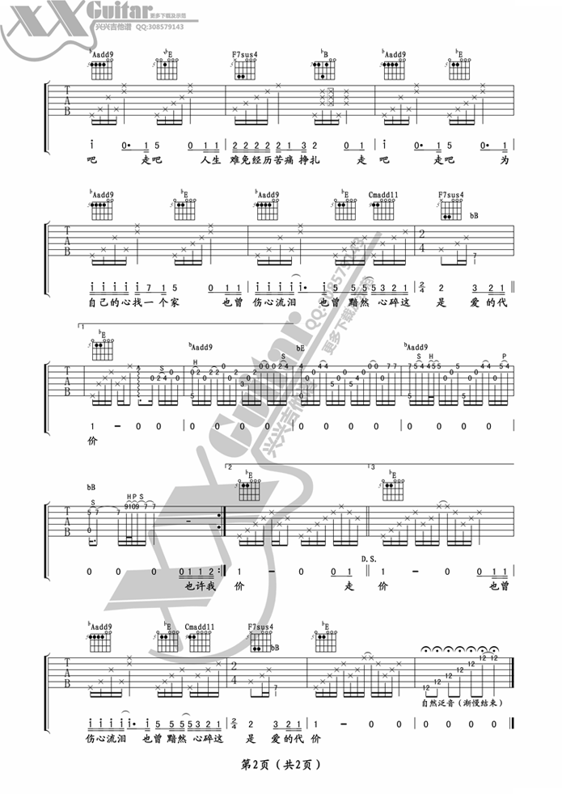

电吉他独奏《亡灵序曲》张俊文
时间:2014-04-23 20:20来源:56jita.com歌手:简单歌曲点击：652次
拍子：4/4拍速：60拍以下 调式：C变调夹：三品单双吉他：单吉他难度：简单
类型：流行弹唱 对应歌手：筷子兄弟
版权声明：所有谱子为网友上传，如果侵犯了你的权益请及时告知。
类型：流行弹唱 对应歌手：筷子兄弟
版权声明：所有谱子为网友上传，如果侵犯了你的权益请及时告知。

 二胡
二胡 电子琴
电子琴 手风琴
手风琴 钢琴
钢琴 沙克斯
沙克斯 竖琴
竖琴 吉他
吉他 笛箫
笛箫